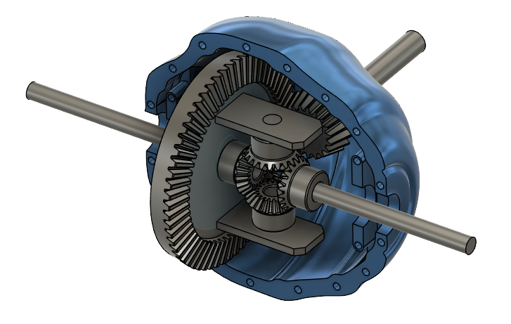
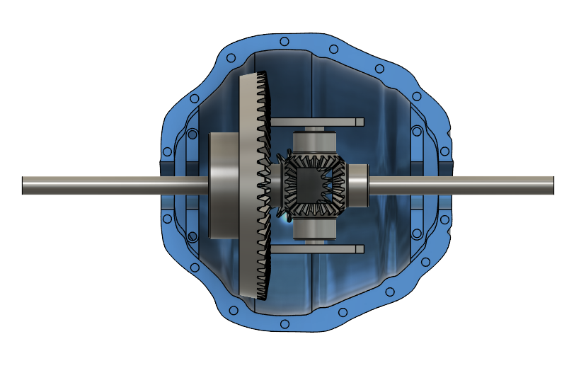
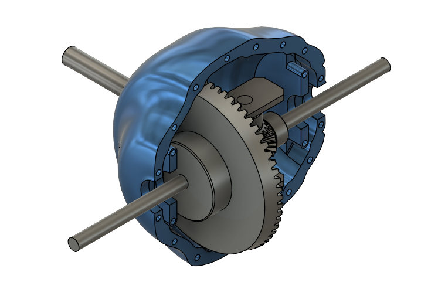

A detailed open differential mechanism designed to demonstrate torque distribution between drive wheels using bevel gears, differential casing, and ring-pinion power transmission.



To design and simulate an automotive open differential mechanism capable of distributing torque while allowing independent wheel rotation during cornering.
Fusion 360
Gear Design · Mechanical Assembly · Motion Simulation
The engine assembly was developed using parametric CAD techniques with carefully aligned rotating stages and internal flow architecture. The partially transparent casing was intentionally designed to expose the compressor and turbine sections for educational and presentation purposes.
The differential assembly was modeled using accurately aligned bevel gears and constrained rotational joints to replicate realistic automotive power transmission behavior between axle shafts.
A ring and pinion gear arrangement was implemented to transfer rotational input from the driveshaft into the differential carrier.
Side gears and spider gears were assembled concentrically to enable independent wheel rotation during turning conditions.
"The assembly demonstrates the working principle of an open differential by distributing rotational motion between axle outputs while maintaining continuous power transmission."
This project demonstrates how differential mechanisms enable smooth vehicle cornering by allowing wheels to rotate at different speeds while maintaining torque delivery from the drivetrain.